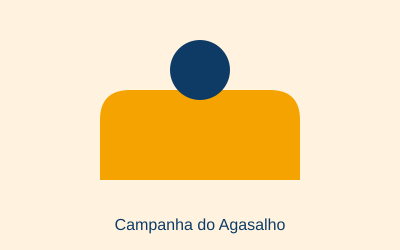
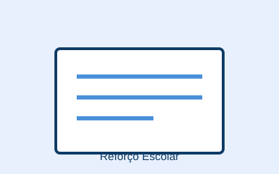

Campanha do Agasalho

Arrecadação de roupas de frio para famílias em situação de vulnerabilidade durante o inverno.

Arrecadação de roupas de frio para famílias em situação de vulnerabilidade durante o inverno.

Aulas de reforço gratuitas em português e matemática para crianças e adolescentes da rede pública.
Você pode contribuir financeiramente via PIX ou transferência bancária, ou doar itens como roupas, alimentos não perecíveis e material escolar.
Procuramos voluntários para diversas frentes de atuação: